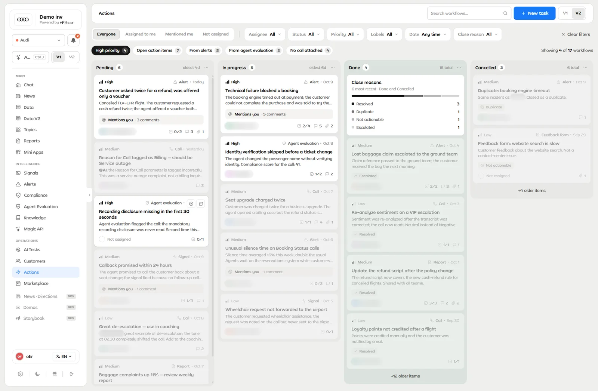
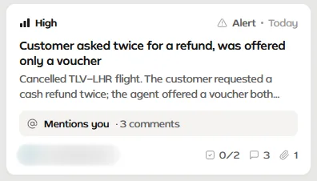
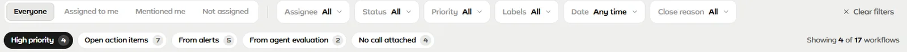
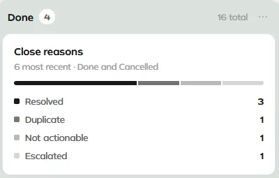
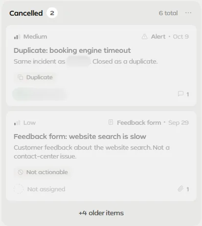

In Hear, alerts, signals and agent evaluations flag what happened on calls. Actions is the board where each finding becomes a task with an owner and a source, and where closed work keeps its reason. Beside it sits AI Tasks, a working prototype where the AI proposes changes and a person approves, modifies or declines each group before anything is submitted.
Role
Only designer and product person
When
2026 · first board in March, screens from October
Scope
Actions board and task panel · earlier: AI Tasks, Alerts
Shown with
Design Lab · demo data
Design Lab · demo data
One task, step by step. Filter to high priority, open a task, tick off an action item, move it to In progress and loop in a teammate with an @mention. The activity log at the bottom keeps the record.
01 · The problem
A finding isn't finished until someone owns it
Hear reads every call, chat and ticket in a contact center. Alerts fire when a monitor trips, signals classify calls, and agent evaluations score each agent. Those screens are built to say that something happened. Saying who is dealing with it, and how it ended, is a different job.
Actions is where that hand-off happens. A finding becomes a task with an owner and a priority. The task keeps a link to where it came from, and when it closes, it records why. Later, the team can see what was raised, by which part of the product, who took it and how it ended.
Design Lab · demo data

The Actions board, V2 in the Lab's version switch. Four columns: Pending, In progress, Done and Cancelled. Every card names its source: an alert, a signal, an agent evaluation, a call, a report or a feedback form. The High priority quick filter is on, so the other cards fade back instead of disappearing. People's names and one task id are blurred.
02 · The board
One card: what happened, where it came from, who has it
Every card follows the same order, top to bottom: how urgent it is, where it came from, what happened, and who has it. The filter bar above the columns follows the same logic, starting with whose work you want to see.
Design Lab · demo data

A card from the board. The same task is opened in the video at the top of the page.
Priority. High, Medium or Low, with a signal-bar icon.
Source and age. Alert, Signal, Agent evaluation, Call, Report or Feedback form, then Today, Yesterday or a date.
What happened. A plain title and two lines of context.
Mentions. A "Mentions you" strip with the comment count, on cards where someone has tagged you.
Owner and progress. The assignee or "Not assigned", action items done out of the total, comments and attachments.
Design choice: being mentioned gets its own strip on the card, so you see you're needed before you open anything.
Filters that ask whose, which and from where

Swipe to see the whole bar →The filter bar. Scope first, then six dropdowns, then quick filters with counts. A line on the right says how much of the board is showing. Design Lab · demo data.
Left to right, the bar answers three questions. Whose work? Everyone, Assigned to me, Mentioned me or Not assigned. Which tasks? Assignee, Status, Priority, Labels, Date and Close reason. From where? Quick filters such as From alerts, From agent evaluation and No call attached, next to High priority and Open action items.
Mentions were in the filters from the first day, as an option inside the Assignee dropdown. On the current board, Assigned to me and Mentioned me are one click away, in their own control.
Design choice: a quick filter fades the cards that don't match instead of removing them, so the board keeps its shape while you focus.
Day one: built, then reworked the same day
The first Actions board went into the Lab in late March 2026. I kept reworking it for the rest of that day.
LayoutFixed the header overlapping the board, then split the columns with full-height 1px dividers.
Card footerThe badge moved to its own row so it stopped overlapping the date, then inline with the name because that "feels connected", then to the left under a divider line.
FiltersStatus and Priority options became colored pills.
ColorEvery color on the page moved onto design-system tokens, and Pending went from coral to grey.
Decision 1 · Status color, day one
What color should a task that's waiting be?
CoralThe first color for Pending. Coral is also Hear's brand accent.
Neutral greySwitched the same day, then darkened step by step.
Result: by the end of the day, Pending was a darker neutral grey, chosen "for clear visibility", and the brand color no longer marked a task that is only waiting.
03 · Closing the loop
Closed work keeps its reason
A task ends in Done or in Cancelled, and either way it says why: Resolved, Duplicate, Not actionable or Escalated. The reason sits on the closed card as a tag. At the top of Done, a small summary counts the reasons for the most recent closed tasks across both columns. Close reason is also a filter, like any other.
A duplicate points to the task it repeats: "Same incident as … Closed as a duplicate." Feedback about the website search closes as Not actionable, with a line that says it isn't a contact-center issue.
Design Lab · demo data

Close reasons. The summary at the top of Done covers the most recent tasks in both Done and Cancelled.
Design Lab · demo data

The Cancelled column. A duplicate links to the task it repeats (id blurred). The cards are faded because the High priority filter was on in this capture.
Inside a task, changes stay on the record
Opening a card opens a side panel, the one in the video at the top. It holds the status, priority, owner and labels, the call the task came from and its topic. Below that: action items with a progress bar, attachments, comments with @mentions, and an activity log that writes down each change, such as Created, Assigned to and Moved to In progress.
Open call and Ask AI sit at the top of the panel, so the call behind the task is one click away. On the first day, the link to the call was only an icon. I replaced it with a labeled "View call" button, and in the current panel it reads "Open call".
Design choice: every task keeps its source, and closed work keeps its reason, such as duplicate or escalated, so the team can learn from what it closed, not only count it.
04 · Earlier work · June 2026
AI Tasks: the AI proposes, a person decides
Actions starts from findings. AI Tasks starts from the AI's own proposals: an operation to run, or a change to the setup. A person approves, modifies or declines each group of changes, and nothing is submitted until every group has a decision. AI Tasks is a working prototype in the Lab.
Three modes, one queue
Requests come in three modes: Operation Requests, System Improvements and Scheduled Tasks, the last a read-only list. The page's own copy sets the tone: "AI-proposed setup changes waiting for your review."
On one side is what's waiting. On the other is a log of past decisions, filtered by status cards.
One decision per group
Opening a request opens a review drawer. For each group of changes it shows:
counts of what will be created, updated and deleted
each field's old value, struck through, beside the new one
the AI's reasoning for that group
Approve, Modify or Decline
Automatic operations sit in their own list, under "These operations do not require approval." Submit decisions stays off until every group has a decision. The lo-fi wireframe already had the per-group decisions, the AI's reasoning and the separate list, and the build kept all three.
Design choice: a person decides on every group of changes before anything is submitted, and what runs without approval is listed apart, in plain view.
Decision 2 · AI Tasks, lo-fi vs build
What should lead the page: status, or the kind of request?
Status first: the lo-fi, "Mission Control"Three view tabs, then a page-wide strip of four counts (Awaiting Approval, Approved, Completed, Rejected) above two panels.
Kind of request first: the build, "AI Tasks"The mode is the main axis. Switching between Operation Requests, System Improvements and Scheduled Tasks re-slices the list, the log and the counts together.
Result: one switch sets the whole page. Status didn't go away: the four counts became small filter cards inside the log, next to past decisions. The page also changed its name from Mission Control to AI Tasks.
Decision 3 · AI Tasks, what a proposal shows
Should each proposal carry a risk rating?
A risk ratingTried in an earlier version of the page.
No ratingThe person judges the change itself: the old and new values, and the AI's reasoning.
Result: the drawer shows the change and the AI's reasoning, and nothing that isn't real. The commit that built the page says it "removed non-real 'risk' concept".
05 · Earlier work · June to July 2026
Alerts: a wireframe, a first build, then a rebuild
Alerts are one of the sources an Actions task can come from. Three concept images for the page, each a different layout, were folded into one lo-fi wireframe. The first build followed that lo-fi almost one to one. A few days later I rebuilt the page, and most of the lo-fi's extra ideas didn't carry over.
Decision 4 · Alerts, first build vs rebuild
Keep the lo-fi's extra features, or rebuild around a table and a shared filter panel?
Keep the first buildCompare mode, filter chips, a last-7-days sparkline on every row, KPI deltas, and multi-select with bulk actions.
RebuildA data table, a stacked chart in the design system's colors, a chart that expands, count-up stat cards, a limit on active monitors, and a filter panel other pages can share.
Result: the rebuild replaced the first build, without the lo-fi's extras. The filter panel did travel: the same day, the Data page swapped its own filter strip for it.
The thread through all three
Alerts raise findings. Actions gives each finding an owner and keeps the reason it closed. AI Tasks covers the case where the AI itself proposes a change: a person decides on every group before anything is submitted.
Screens from Hear Design Lab with demo data; people's names and one task id blurred. Quoted phrases come from the Lab's commit messages and on-screen copy. The Lab was started by me and coded with Claude Code from a colleague's starting app.